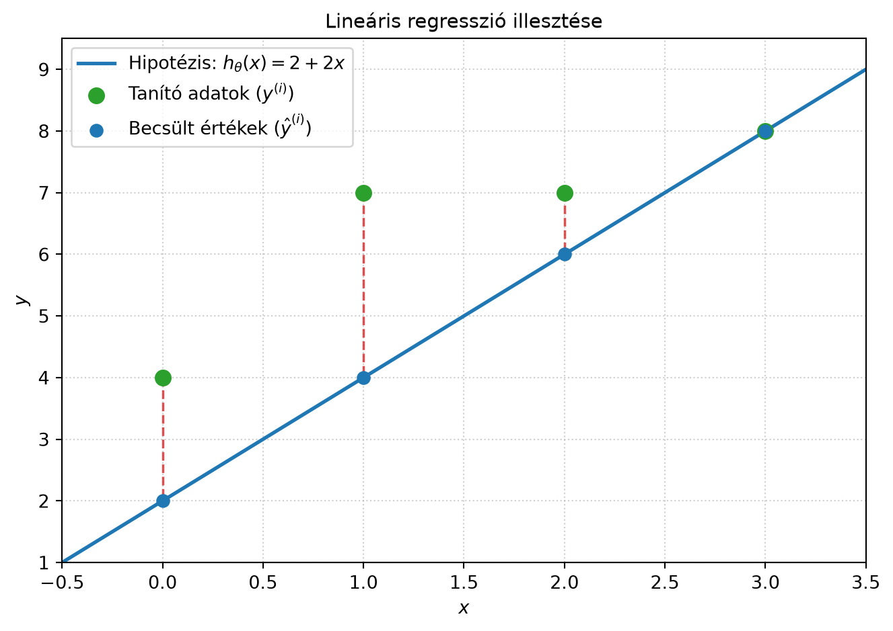
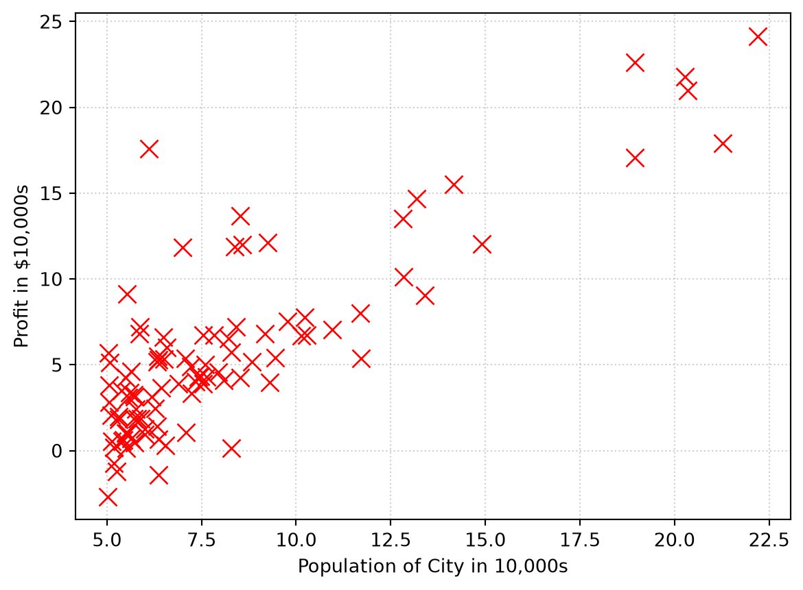
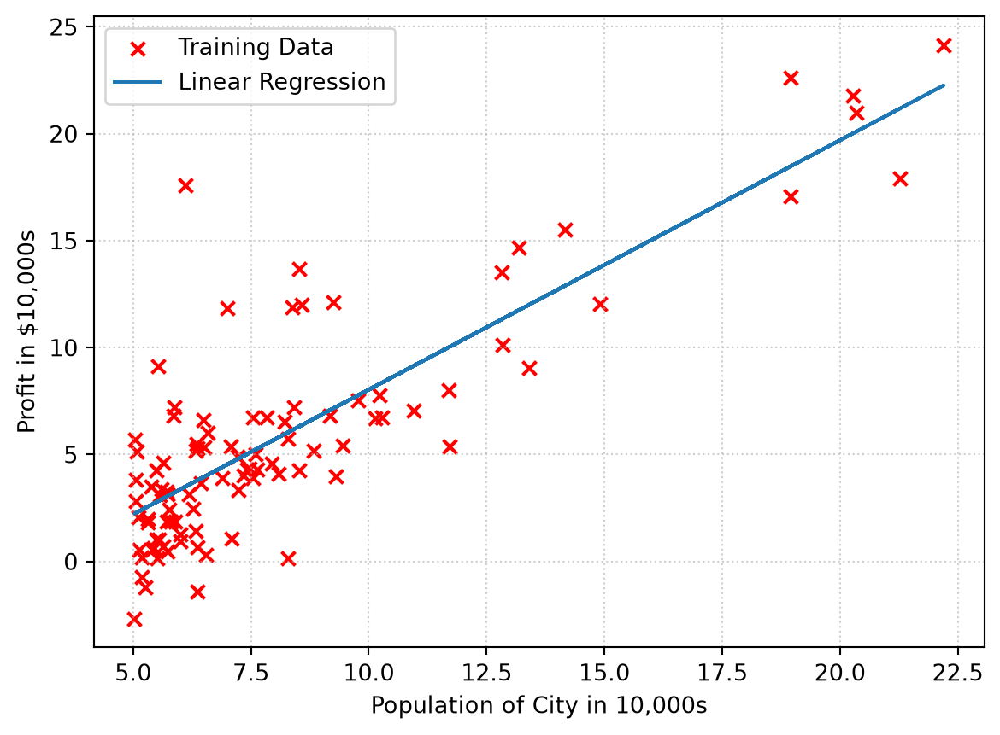

Gépi tanulás
Bevezetés
NoteMi a gépi tanulás?
Az a tudományterület, amely képessé teszi a számítógépeket arra, hogy kifejezett programozás nélkül tanuljanak.
Egy számítógépes programról akkor mondjuk, hogy tanul az E tapasztalatból a T feladatok egy osztályára és a P teljesítménymértékre nézve, ha a T-beli feladatokon nyújtott, P-vel mért teljesítménye javul az E tapasztalattal.
Például: dámajáték
E = sok dámajáték lejátszásának tapasztalata
T = a dámajáték játszásának feladata.
P = annak a valószínűsége, hogy a program megnyeri a következő játszmát.
Bármely gépi tanulási probléma besorolható a két tág kategória egyikébe: felügyelt tanulás, vagy felügyelet nélküli tanulás.
TipFelügyelt tanulás (Supervised Learning)
Adott egy adathalmaz, és előre tudjuk, hogyan kell kinéznie a helyes kimenetnek, feltételezve, hogy kapcsolat van a bemenet és a kimenet között.
A felügyelt tanulási problémákat két csoportra osztjuk:
- Regresszió: folytonos kimenetet próbálunk megjósolni, vagyis a bemeneti változókat egy folytonos függvényre képezzük le.
- Klasszifikáció (osztályozás): diszkrét kimenetet próbálunk megjósolni, vagyis a bemeneti változókat diszkrét kategóriákba soroljuk.
CautionPélda
Regresszió:
- házak mérete alapján a pontos eladási ár megjósolása (folytonos érték).
- egy fénykép alapján az adott személy életkorának megjósolása.
Klasszifikáció:
- annak eldöntése, hogy a ház a kikiáltási ár alatt vagy felett kel-e el (két diszkrét kategória).
- egy fénykép alapján annak besorolása, hogy az illető középiskolás, egyetemista vagy diplomás korú-e; illetve banki hitelbírálat (kap-e hitelt valaki a hiteltörténete alapján).
TipFelügyelet nélküli tanulás (Unsupervised Learning)
Olyan problémák megközelítését teszi lehetővé, ahol alig vagy egyáltalán nincs elképzelésünk arról, hogyan kell kinéznie az eredménynek.
Az adatokból nyerünk ki struktúrát anélkül, hogy ismernénk a változók pontos hatását. Nincs visszajelzés az előrejelzések alapján (nincs „tanár”, aki kijavítaná a modellt).
Például:
- Klaszterezés: 1000, az amerikai gazdaságról szóló esszé automatikus csoportosítása hasonlóságok alapján (pl. szógyakoriság, mondathossz, oldalszám szerint).
- Nem klaszterezéses eljárás: a „koktélparti-algoritmus” (Cocktail Party Algorithm), amely rendezetlen adatokban talál struktúrát – például különválasztja az egyes beszédhangokat és a zenét egy koktélparti hangzavarából.
Egyváltozós lineáris regresszió
NoteModellreprezentáció és hipotézisfüggvény
Az egyváltozós lineáris regressziót akkor alkalmazzuk, amikor egyetlen bemeneti változóból (\(x\)) szeretnénk egyetlen folytonos kimeneti értéket (\(y\)) megjósolni. Mivel felügyelt tanulásról van szó, van elképzelésünk a bemenet és a kimenet közötti ok-okozati kapcsolatról.
A hipotézisfüggvény általános alakja (amely egy egyenes egyenletének felel meg):
\[\hat{y} = h_\theta(x) = \theta_0 + \theta_1 x\]
- \(\theta_0\) és \(\theta_1\) a modell paraméterei (súlyai), amelyek megadásával megkapjuk a becsült kimenetet (\(\hat{y}\)).
- Célunk olyan \(\theta_0\) és \(\theta_1\) értékek megtalálása, amelyek a legjobban illeszkedő egyenest adják az \(x\)-\(y\) síkon elhelyezkedő adatpontokra.
CautionPélda
Tegyük fel, hogy adott az alábbi tanító adathalmaz:
| Bemenet (\(x\)) | Kimenet (\(y\)) |
|---|---|
| 0 | 4 |
| 1 | 7 |
| 2 | 7 |
| 3 | 8 |
Ha véletlenszerűen a \(\theta_0 = 2\) és \(\theta_1 = 2\) paramétereket választjuk, a hipotézisfüggvényünk:
\[h_\theta(x) = 2 + 2x\]
Ekkor \(x = 1\) bemenetre a modell által becsült érték \(h_\theta(1) = 4\), ami \(3\)-mal tér el a valós \(y = 7\) értéktől.
Költségfüggvény
NoteKöltségfüggvény (Cost Function)
A hipotézisfüggvény pontosságát a költségfüggvénnyel mérjük, amely a becsült és a valós értékek különbségének négyzetátlagát számítja ki:
\[J(\theta_0, \theta_1) = \frac{1}{2m} \sum_{i=1}^{m} \left(\hat{y}^{(i)} - y^{(i)}\right)^2 = \frac{1}{2m} \sum_{i=1}^{m} \left(h_\theta(x^{(i)}) - y^{(i)}\right)^2\]
- Ezt négyzetes hibafüggvénynek (Squared error function) vagy átlagos négyzetes hibának (Mean Squared Error, MSE) is nevezzük.
- Az átlag felezése (\(\frac{1}{2m}\)) technikai kényelmi lépés: a gradiens ereszkedés során a négyzetfüggvény deriválásából adódó \(2\)-es szorzó így pontosan kiejti az \(\frac{1}{2}\)-et.
- Vizuális értelmezés: a legjobb egyenes az, amelynél az adatpontok egyenestől mért függőleges távolságainak négyzetátlaga a legkisebb. Ideális esetben (ha az egyenes minden ponton áthalad) \(J(\theta_0, \theta_1) = 0\).
- \(\hat{y}^{(i)} = h_\theta(x^{(i)})\): az \(i\)-edik tanítópélda bemenetére (\(x^{(i)}\)) a hipotézisfüggvény (\(h_\theta\)) által adott becsült kimeneti érték (\(\hat{y}^{(i)}\)).
Órai kód
TipKód
1. Adathalmazok letöltése és előkészítése
Első lépésként létrehozunk egy helyi Files könyvtárat, majd letöltjük a gyakorláshoz szükséges két adathalmazt (ex1data1.txt az egyváltozós, ex1data2.txt a többváltozós lineáris regresszióhoz), amennyiben azok még nem találhatók meg a gépen.
import os
import os.path as op
from urllib.request import urlretrieve
# Mappa létrehozása, ha még nem létezik
def create_folder(folder):
if not op.exists(folder):
os.mkdir(folder)
print(f"Creating:\t\t {folder}")
else:
print(f"Already exist:\t\t {folder}")
# Fájl letöltése a megadott URL-ről, ha még nincs letöltve
def download_file(url, filename):
if not op.exists(filename):
print(f"Downloading:\t\t {url} --> {filename}")
urlretrieve(url, filename)
else:
print(f"Already downloaded:\t {url} --> {filename}")
# Célkönyvtár és az adathalmazok elérési útjainak definiálása
FILES = "Files"
EX1DATA1_URL = "[https://raw.githubusercontent.com/KeremDUZENLI/python-jupyter-machine-learning/refs/heads/main/notebooks/Files/ex1data1.txt](https://raw.githubusercontent.com/KeremDUZENLI/python-jupyter-machine-learning/refs/heads/main/notebooks/Files/ex1data1.txt)"
EX1DATA1 = FILES + "/ex1data1.txt"
EX1DATA2_URL = "[https://raw.githubusercontent.com/KeremDUZENLI/python-jupyter-machine-learning/refs/heads/main/notebooks/Files/ex1data2.txt](https://raw.githubusercontent.com/KeremDUZENLI/python-jupyter-machine-learning/refs/heads/main/notebooks/Files/ex1data2.txt)"
EX1DATA2 = FILES + "/ex1data2.txt"
# Könyvtár létrehozása és a fájlok letöltése
create_folder(FILES)
download_file(EX1DATA1_URL, EX1DATA1)
download_file(EX1DATA2_URL, EX1DATA2)Already exist: Files
Already downloaded: [https://raw.githubusercontent.com/KeremDUZENLI/python-jupyter-machine-learning/refs/heads/main/notebooks/Files/ex1data1.txt](https://raw.githubusercontent.com/KeremDUZENLI/python-jupyter-machine-learning/refs/heads/main/notebooks/Files/ex1data1.txt) --> Files/ex1data1.txt
Already downloaded: [https://raw.githubusercontent.com/KeremDUZENLI/python-jupyter-machine-learning/refs/heads/main/notebooks/Files/ex1data2.txt](https://raw.githubusercontent.com/KeremDUZENLI/python-jupyter-machine-learning/refs/heads/main/notebooks/Files/ex1data2.txt) --> Files/ex1data2.txt2. Az ex1data1.txt felépítése
Az állomány \(97\) tanítópéldát tartalmaz két, szóközzel elválasztott oszlopban: az első oszlop a város lakossága (\(10\,000\) főben), a második pedig az elért profit (\(10\,000\) dollárban). Az első \(5\) sor tartalma:
6.1101 17.592
5.5277 9.1302
8.5186 13.662
7.0032 11.854
5.8598 6.82333. Adatok betöltése és vizualizációja
Betöltjük az ex1data1.txt fájlt egy NumPy tömbbe, szétválasztjuk a bemeneti változót (\(X\)) és a kimeneti célértéket (\(y\)), majd pontdiagramon ábrázoljuk az adatpontok eloszlását.
import numpy as np
import matplotlib.pyplot as plt
# Adatpontok kirajzolása piros keresztekkel ("rx")
def plotData(x, y):
plt.figure()
plt.plot(x, y, "rx", markersize=10)
plt.xlabel("Population of City in 10,000s")
plt.ylabel("Profit in $10,000s")
plt.grid(True, linestyle=':', alpha=0.6)
plt.show()
# Adathalmaz beolvasása és felosztása jellemzőkre (X) és célértékre (y)
data = np.loadtxt(EX1DATA1)
X = data[:, 0] # Első oszlop: bemeneti változó (lakosság)
y = data[:, 1] # Második oszlop: kimeneti változó (profit)
m = y.size # Tanítópéldák száma
# Adatok megjelenítése
plotData(X, y)
4. A költségfüggvény (\(J(\theta)\)) implementálása és tesztelése
Vektorizált formában implementáljuk a négyzetes hibafüggvényt: \(J(\theta) = \frac{1}{2m} \sum_{i=1}^{m} (h_\theta(x^{(i)}) - y^{(i)})^2\), ahol a becsléseket a mátrix-vektor szorzás (X.dot(theta)) számítja ki egyszerre az összes tanítópéldára.
A mátrixszorzáshoz az \(X\) bemeneti vektor elé beszúrunk egy csupa egyesekből álló oszlopot (np.ones((m, 1))) a \(\theta_0\) eltolási tag (bias/intercept) kezeléséhez, majd ellenőrizzük a függvény működését \(\theta = [0, 0]^T\) és \(\theta = [-1, 2]^T\) kezdőértékekkel.
def computeCost(X, y, theta):
m = y.size # Tanítópéldák száma
predictions = X.dot(theta) # Hipotézis értékek: h_theta(x) = X * theta
J = (1 / (2 * m)) * np.sum((predictions - y) ** 2) # Átlagos négyzetes hiba fele
return J
# Csupa 1-es oszlop hozzáadása az X mátrixhoz a theta_0 tag miatt
X = np.c_[np.ones((m, 1)), X]
X_b = X
print("Initial cost with theta = [0, 0]:", computeCost(X, y, np.array([0, 0])))
print("Cost with theta = [-1, 2]:", computeCost(X, y, np.array([-1, 2])))Initial cost with theta = [0, 0]: 32.072733877455676
Cost with theta = [-1, 2]: 54.24245508201238Gradiens ereszkedés (Gradient Descent)
NoteA gradiens ereszkedés algoritmusa
A gradiens ereszkedés egy iteratív optimalizáló algoritmus, amellyel megkeressük a költségfüggvény minimumát (vagyis az optimális \(\theta_0, \theta_1\) paramétereket).
- Ha a \(\theta_0\) és \(\theta_1\) paramétereket a vízszintes tengelyeken, a \(J(\theta_0, \theta_1)\) költséget pedig a függőleges tengelyen ábrázoljuk, egy felületet kapunk, amelynek a legmélyebb pontját keressük.
- A parciális deriváltakból álló gradiens vektor (\(\nabla J(\theta)\)) a legmeredekebb emelkedés irányába mutat – mi ezzel ellentétes irányba (a negatív gradiens felé) lépünk lefelé:
\[\nabla J(\theta) = \begin{bmatrix} \frac{\partial}{\partial \theta_0} J(\theta_0, \theta_1) \\ \frac{\partial}{\partial \theta_1} J(\theta_0, \theta_1) \end{bmatrix}\]
Általános frissítési szabály (ismétlés konvergenciáig):
\[\theta := \theta - \alpha \nabla J(\theta) \qquad \Longleftrightarrow \qquad \theta_j := \theta_j - \alpha \frac{\partial}{\partial \theta_j} J(\theta_0, \theta_1) \quad (j = 0, 1)\]
- \(\alpha\) (tanulási ráta / learning rate): meghatározza a lépésközt, amellyel lefelé haladunk a felületen.
- Intuitívan: \(\theta_j := \theta_j - \alpha \cdot [\text{az érintő meredeksége a } j\text{-edik dimenzióban}]\).
NoteGradiens ereszkedés lineáris regresszióra
A költségfüggvény és a hipotézisfüggvény behelyettesítése, valamint a parciális deriváltak kiszámítása után a paraméterek frissítési szabályai a következő alakot öltik:
Skaláris alak (szimultán frissítéssel, konvergenciáig):
\[\theta_0 := \theta_0 - \alpha \frac{1}{m} \sum_{i=1}^{m} \left(h_\theta(x^{(i)}) - y^{(i)}\right)\]
\[\theta_1 := \theta_1 - \alpha \frac{1}{m} \sum_{i=1}^{m} \left(h_\theta(x^{(i)}) - y^{(i)}\right) x^{(i)}\]
Vektorizált alak:
\[\theta := \theta - \frac{\alpha}{m} X^T (X\theta - y)\]
- Ahol \(m\) a tanítópéldák száma, \(x^{(i)}\) és \(y^{(i)}\) pedig az \(i\)-edik tanítópélda értékei.
- A \(\theta_1\) képletében a láncszabály szerinti deriválás miatt jelenik meg az \(x^{(i)}\)-vel való szorzás.
- Fontos, hogy \(\theta_0\) és \(\theta_1\) értékét minden iterációban egyszerre (szimultán) kell frissíteni.
Kapcsolódó tananyag: Lineáris regresszió és a kvadratikus függvény
CautionMagyarázat: Hogyan lesz a szummákból mátrixszorzás?
A skaláris felírásban a két paraméter frissítése külön-külön így néz ki:
\[\theta_0 := \theta_0 - \alpha \frac{1}{m} \sum_{i=1}^{m} \left(h_\theta(x^{(i)}) - y^{(i)}\right) \cdot 1\]
\[\theta_1 := \theta_1 - \alpha \frac{1}{m} \sum_{i=1}^{m} \left(h_\theta(x^{(i)}) - y^{(i)}\right) \cdot x^{(i)}\]
Bontsuk három lépésre a vektorizált X.T.dot(X.dot(theta) - y) kifejezést:
Predikciók és hibavektor (\(e = X\theta - y\)):
Mivel az \(X\) mátrix első oszlopa csupa \(1\)-esből áll (\(x_0^{(i)} = 1\)), a mátrix-vektor szorzat egyszerre számolja ki az összes predikciót, \(y\) kivonása pedig az \(m\) elemű hibavektort adja:\[e = X\theta - y = \begin{bmatrix} 1 & x^{(1)} \\ 1 & x^{(2)} \\ \vdots & \vdots \\ 1 & x^{(m)} \end{bmatrix} \begin{bmatrix} \theta_0 \\ \theta_1 \end{bmatrix} - \begin{bmatrix} y^{(1)} \\ y^{(2)} \\ \vdots \\ y^{(m)} \end{bmatrix} = \begin{bmatrix} h_\theta(x^{(1)}) - y^{(1)} \\ h_\theta(x^{(2)}) - y^{(2)} \\ \vdots \\ h_\theta(x^{(m)}) - y^{(m)} \end{bmatrix} \in \mathbb{R}^{m \times 1}\]
Szorzás a transzponált bemeneti mátrixszal (\(X^T e\)):
Az \(X\) mátrix transzponálásával (\(X^T \in \mathbb{R}^{2 \times m}\)) a jellemzők sorokba kerülnek. A hibavektorral való szorzás így pontosan a két parciális derivált szummáját állítja elő:\[X^T (X\theta - y) = \begin{bmatrix} 1 & 1 & \cdots & 1 \\ x^{(1)} & x^{(2)} & \cdots & x^{(m)} \end{bmatrix} \begin{bmatrix} e^{(1)} \\ e^{(2)} \\ \vdots \\ e^{(m)} \end{bmatrix} = \begin{bmatrix} \sum_{i=1}^{m} 1 \cdot e^{(i)} \\ \sum_{i=1}^{m} x^{(i)} \cdot e^{(i)} \end{bmatrix} \in \mathbb{R}^{2 \times 1}\]
Skálázás és szimultán frissítés:
A kapott \(2 \times 1\)-es vektort megszorozzuk az \(\frac{\alpha}{m}\) skalárral, és kivonjuk a jelenlegi \(\theta\) vektorból:\[\theta := \theta - \frac{\alpha}{m} X^T (X\theta - y) \quad \Longleftrightarrow \quad \texttt{theta = theta - (alpha / m) * (X.T.dot(X.dot(theta) - y))}\]
TipKód
1. A gradiens ereszkedés implementálása és futtatása
A vektorizált frissítési szabályt alkalmazva megkeressük az optimális \(\theta\) paramétereket \(\alpha = 0.01\) tanulási rátával és \(1500\) iterációval, miközben a J_history tömbben naplózzuk a költségfüggvény alakulását.
def gradientDescent(X, y, theta, alpha, num_iters):
"""
Gradiens ereszkedés végrehajtása a theta paraméterek megtanulásához.
"""
m = y.size # Tanítópéldák száma
J_history = np.zeros(num_iters) # Költségfüggvény értékeinek naplózása
for i in range(num_iters):
# Paraméterek szimultán frissítése a negatív gradiens irányába
theta = theta - (alpha / m) * (X.T.dot(X.dot(theta) - y))
# Aktuális költség elmentése
J_history[i] = computeCost(X, y, theta)
return theta, J_history
# Hiperparaméterek beállítása
iterations = 1500
alpha = 0.01
theta = np.zeros(2)
# Optimalizálás futtatása a kezdeti [0, 0] paramétervektorról indulva
theta, J_history = gradientDescent(X, y, theta, alpha, iterations)
print("Theta found by gradient descent:", theta)Theta found by gradient descent: [-3.63029144 1.16636235]2. Az illesztett regressziós egyenes megjelenítése
A megtanult \(\theta_0 \approx -3.63\) és \(\theta_1 \approx 1.17\) paraméterekkel kirajzoljuk az adatokra illesztett regressziós egyenest (\(h_\theta(x) = X\theta\)).
plt.figure()
plt.scatter(X[:, 1], y, color='red', marker='x', label='Training Data')
plt.plot(X[:, 1], X.dot(theta), label='Linear Regression')
plt.xlabel("Population of City in 10,000s")
plt.ylabel("Profit in $10,000s")
plt.legend()
plt.grid(True, linestyle=':', alpha=0.6)
plt.show()